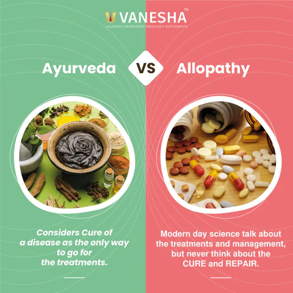

Evidence-based benefits of traditional approaches There are many evidences, which supported Ayurveda performances better than Western medicine, mainly in case of chronic diseases, but it needs to validate with advanced scientific procedures. Ayurveda recommends the use of copper pot for water-purification as copper pot has antibacterial effect against important diarrheagenic bacteria including Vibrio cholerae, Shigella flexneri, enterotoxigenic Escherichia coli, enteropathogenic E. coli, Salmonella enterica typhi and Salmonella paratyphi, which is scientifically validated.Ayurveda also has the ability of wound healing via a topical route with the help of various preparations.Moreover, many Ayurvedic formulations and Rasayanas have scientifically validated in various in vivo models. In this connection, Amalaki, an Ayurvedic Rasayana, and Rasa Sindoora, an organometallic derivative of mercury are effective in longevity, development, fecundity, stress tolerance, and heterogeneous nuclear ribonucleoprotein levels of Drosophila melanogaster.

Ayurveda is indian pride and saving it from being Extinct is our Responsibility.This website is our effort to save it and gather the atmost ayurveda techniques which are being lost,In This Website Every person can submit there knowings of the Ayurvedha Techniques.
HEALTHY SPIRITS is optimized for learning.Remidies might be simplified to improve reading and basic understanding. Tutorials, references, and examples are constantly reviewed to avoid errors, but we cannot warrant full correctness of all content. While using this site, you agree to have read and accepted our terms of use, cookie and privacy policy.
Copyright 1999-2022 by Refsnes Data. All Rights Reserved.